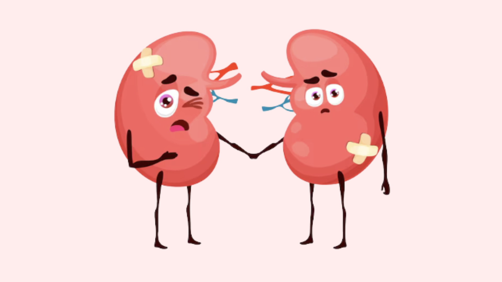
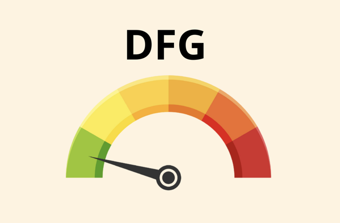
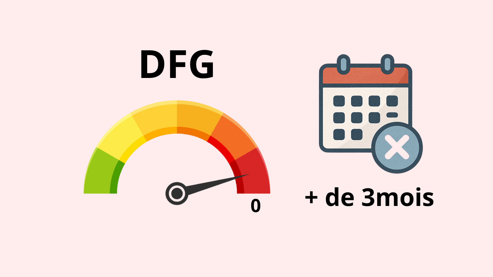

Nos reins sont essentiels à notre santé. Lorsqu’ils commencent à fatiguer, cela peut passer inaperçu. C’est ce qu’on appelle l’insuffisance rénale ou maladie rénale chronique (MRC)
Quand les reins n’assurent plus leur rôle…

Lorsque les reins ne sont plus capables de filtrer le sang correctement et d’éliminer les déchets du corps, on parle d’insuffisance rénale, aussi appelée maladie rénale chronique.
C’est une maladie qui s’installe progressivement et souvent sans symptômes visibles au début. Elle peut passer totalement inaperçue pendant longtemps.
Heureusement, si elle est diagnostiquée à temps et bien prise en charge, elle peut être stabilisée et devenir une maladie gérable au quotidien.
Qu’est-ce que la maladie rénale chronique ?
La maladie rénale chronique (ou MRC) correspond à une diminution progressive et permanente du fonctionnement des reins.
Ils ne filtrent plus correctement le sang, ce qui entraîne une accumulation de toxines dans l’organisme.
Souvent silencieuse, cette maladie est découverte par hasard, lors :
d’un bilan sanguin pour une autre pathologie,
d’un bilan urinaire ou bandelette urinaire,
ou d’un dépistage chez des personnes à risque, comme les patients diabétiques ou hypertendus.
Comment surveiller la santé de ses reins ?
Parce que la maladie rénale évolue sans douleur ni signes visibles, la seule manière fiable de la détecter est un bilan sanguin.
Ce test permet de mesurer le taux de créatinine dans le sang, un indicateur clé du fonctionnement des reins.
À partir de ce taux, on calcule le débit de filtration glomérulaire (DFG).
Le DFG :
Le DFG estime la capacité du rein à filtrer le sang

Plus le DFG est bas, moins les reins fonctionnent correctement.
À l’inverse, plus le taux de créatinine est élevé, plus la fonction rénale est altérée.
Quand parle-t-on de maladie rénale chronique ?

On parle de maladie rénale chronique lorsque le débit de filtration glomérulaire (DFG) reste inférieur à 60 ml/min pendant plus de trois mois.